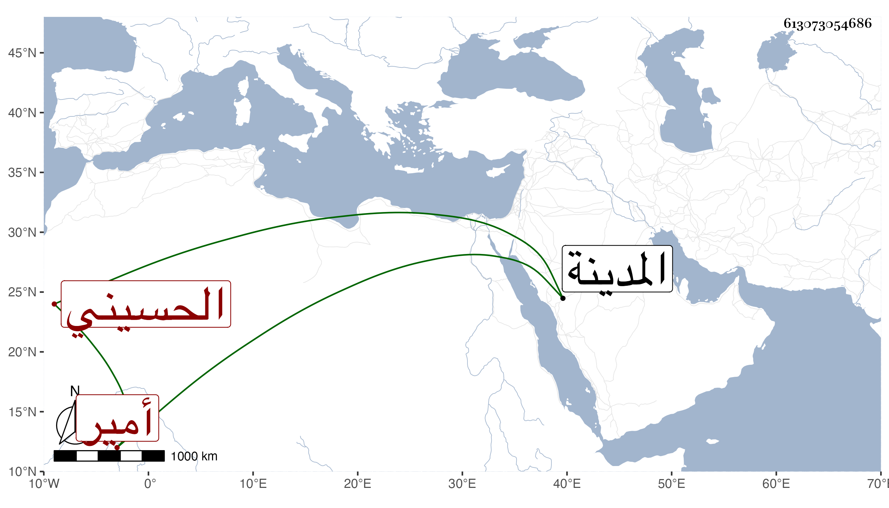

0902Sakhawi.DawLamic.ITO20230111-ara1.EIS1600.613073054686
Biography ID: 613073054686
1
ضغيم بن خشرم بن ثابت بن نعير الحسيني أمير المدينة . وليها في شوال سنة تسع وستين فأقام نحو أربعة أشهر ثم انفصل بابراهيم بن سليمان ثم أعيد بعد موته في سنة أربع وسبعين فاستمر إلى رمضان سنة ثلاث وثمانين فانفصل بقسيطل بن زهير
